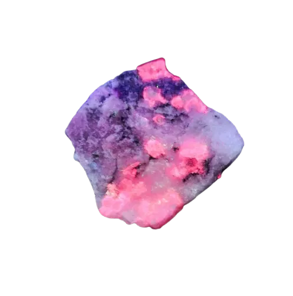

Mineral Grimoire
 Tugtupite with Nuummite
Tugtupite with Nuummite
Appearance
Pale yellowish matrix. with flashes of pink, red and black, mottled and speckled.
Origin
Greenland.
Attributes
This powerful combination brings together the loving strength of Tugtupite with the awesome protective power of Nuummite, creating an impenetrable shield that, paradoxically, both facilitates and assimilates vibrational change. Assuring, 'I'll stick with you whatever', this combination offers psychological strength and protection from within your heart against outside influence of any kind and assists in healing heartbreak and abandonment.
Psychologically, this combination is particularly helpful for reversing the effects of an unsafe or deprived childhood, whether that was from physical, emotional or mental abuse or benign neglect. Offering a sense of paternal safety that facilitates fathering yourself, and anchoring that deep in your core, this combination assists in standing in your compassionate heart imbued with unconditional love and forgiveness for all concerned.
An extremely effective spirit-release tool where a discarnate spirit or incarnate parent is tugging at the heart strings trying to retain emotional control allegedly 'for your own good', this combination is also helpful when prayers are being said that interfere with your autonomy. Tugtupite encourages forgiveness and insightful communication and Nuummite severs old connections so that unconditional love flows into your heart and provides a shield. Particularly useful when you are in victim mode, teaching how to become a strong survivor instead, the combination helps to explain why the connection and manipulation are no longer relevant and assures the other person that you are now strong enough to stand up for yourself. This combination gets in touch with the love at the centre of the universe, expressing that to everything within it. It dissolves the effects of sorcery in the present or any other life, creating a protective shield around your heart.
Healing
Works best at the subtle levels of being to release emotional wounds and to cut off from the past. When held, it instils a profound feeling of safety and the ability to cope.
Position
Hold or position as appropriate. Wear for as long as possible over the heart. Grid in a Star of David in the environment to facilitate vibrational change in the earth's energy field.
Additional Notes
If the combined stone is not available, use individual Tugtupite and Nuummite stones placed together.